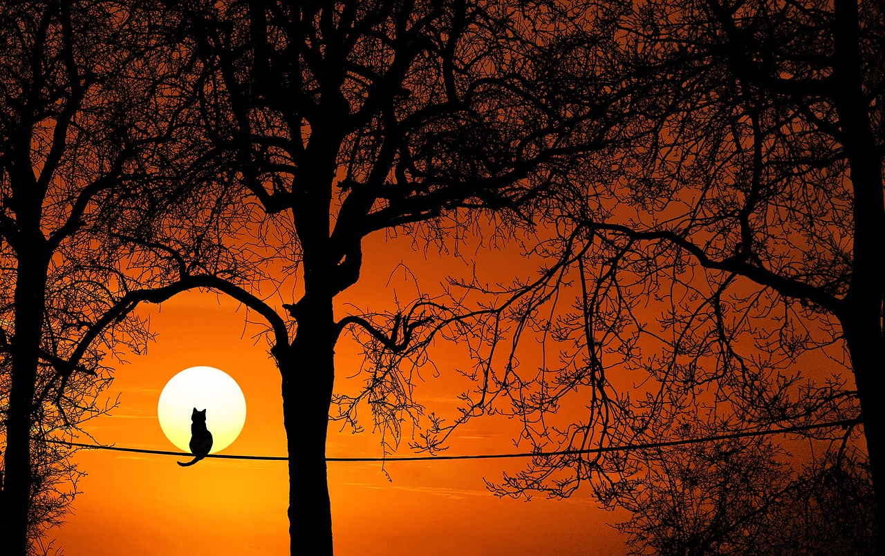
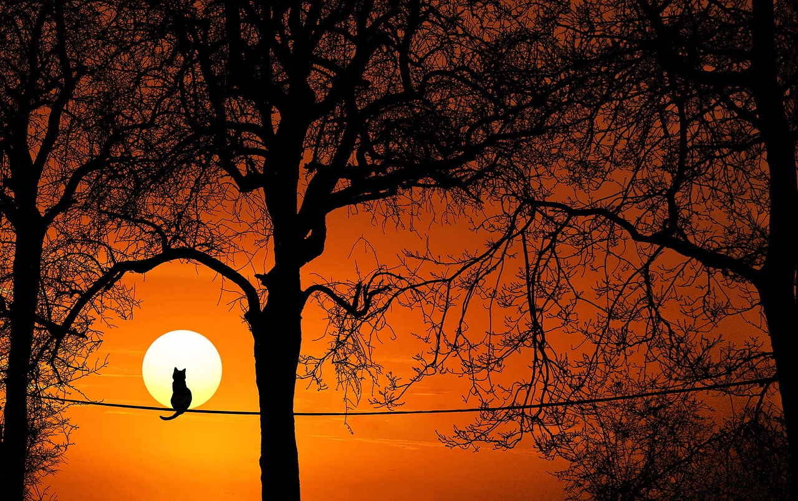

Free Stock Photo
Rps Photo
Latest Blog Posts
[12-FEB-2024]
First Pic
First Pic about Nature
[12-FEB-2024]
Second Pic
Second Pic about Nature
[12-FEB-2024]
Third Pic
Third Pic about Nature
[12-FEB-2024]
Fourth Pic
Fourth Pic about Nature

Welcome to our photo site!
This free website
templateis brought to you by TemplateMo.comwebsite.You may
use this template in your websites.Credit goes
to Pradeep suryafor photos.
The word Photography literally means 'drawing with light', which derives from the Greek photo, meaning light and graph, meaning to draw. Photography is the process of recording an image – a photograph – on lightsensitive film or, in the case of digital photography, via a digital electronic or magnetic memory.
Categories
- Nature
- Space
- Ocean
- Beach
- Forest
- Sunset
- River


 

Small ship is called a Boat.Boats are used to travel on lakes, ponds, waterways etc. Boats are commonly used for fishing. Ezoic Rowboats are paddles used to sail.Sailboats sail with the help of the wind.A Boat is made up of wood, iron, steel etc.Read more...
A river is a naturally flowing water body containing freshwater.It flows towards a big water body such as an ocean or sea.In some places, the river flows into the another water body.Rivers generally flow through plains and other geographical locations.Read more...
The place where the land merges into the sea is known as the beach.Beaches may be sandy or rocky.Beaches offer beautiful sights of the sea.The place where the land merges into the sea is known as the beach.Beaches may be sandy or rocky.Read more...
A sunset is one of the most stunning natural wonders that one can witness. As the sun gradually sinks below the horizon, it paints the sky with a breathtaking display of colors that range from brilliant reds and oranges to soft pinks and purples.Read more...